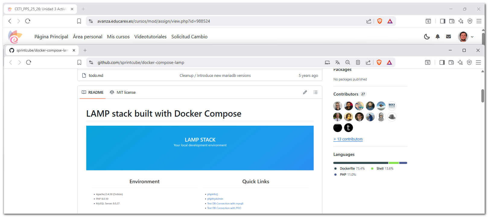
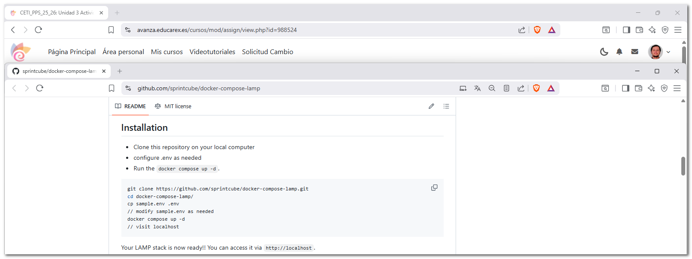
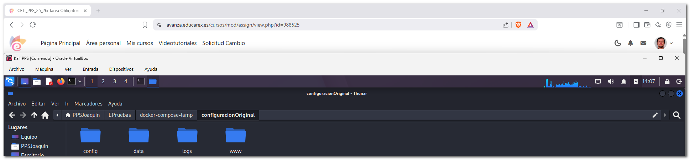
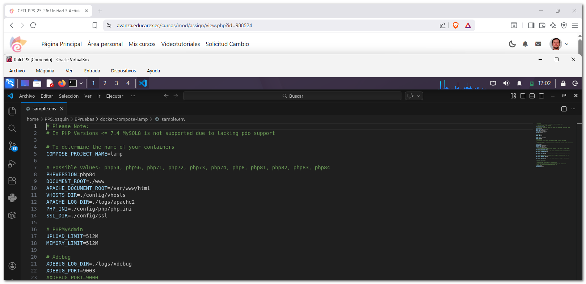
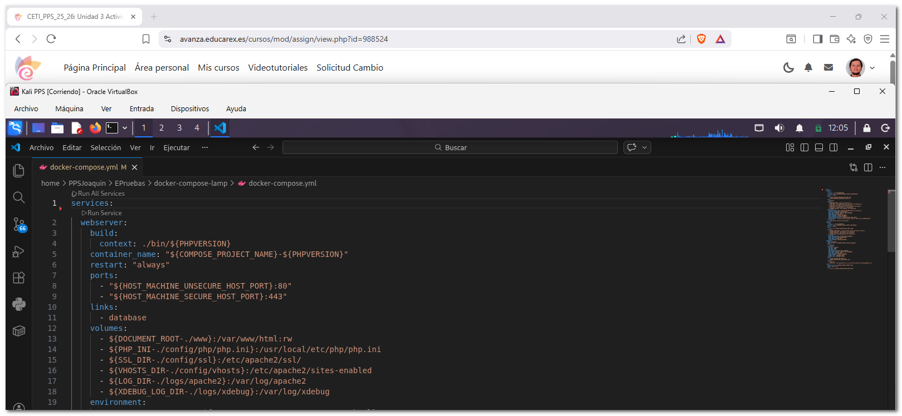
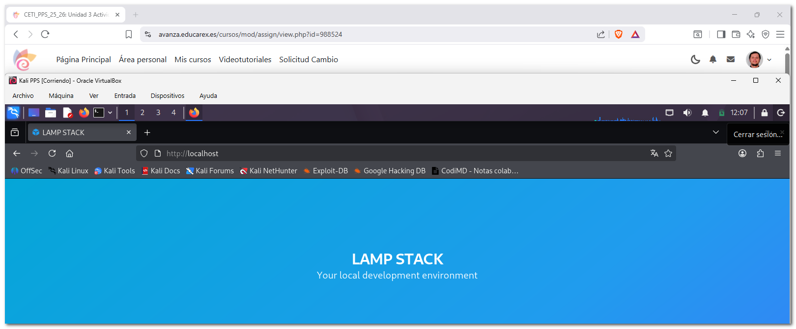
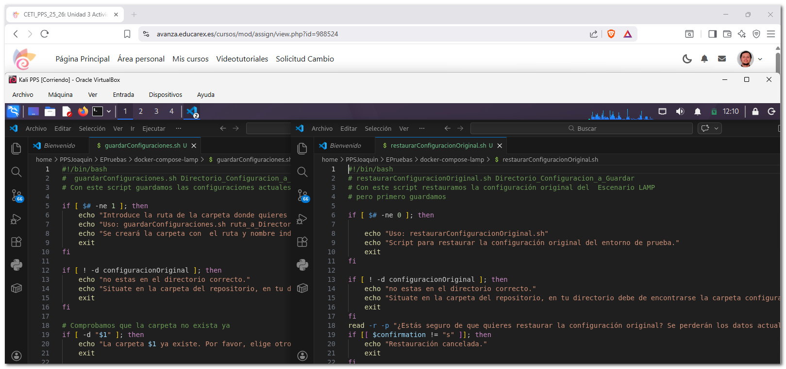
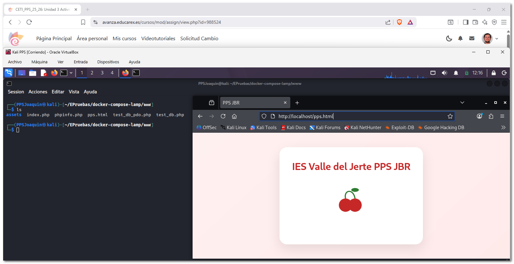
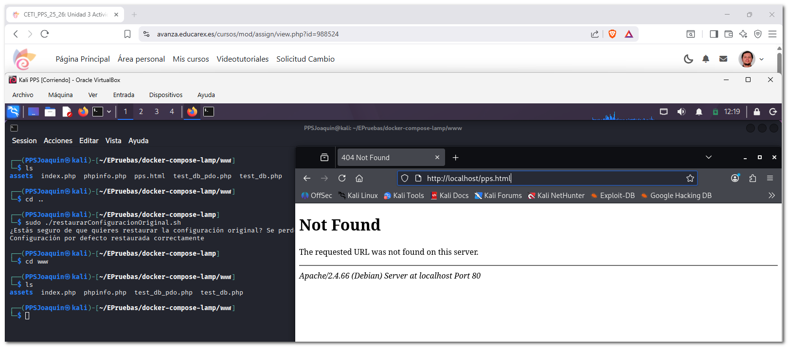

1. Documentación sobre la creación del entorno de Pruebas¶
En esta documentación se describe el proceso de creación de un entorno de prueba. Este entorno se utilizará posteriormente para realizar distintas actividades relacionadas con la introducción y análisis de vulnerabilidades, con el objetivo de aprender a detectarlas y corregirlas.
Para ello despliego un escenario multicontenedor utilizando Docker, que incluye los servicios necesarios para un entorno LAMP (Linux, Apache, MySQL y PHP).
- Creo un escenario multicontenedor basasdo en LAMP que encontramos en el siguiente repositorio: (https://github.com/sprintcube/docker-compose-lamp.git).

1.1 Instalación¶
Para realizar la instalación del entorno LAMP se siguen las instrucciones proporcionadas en el repositorio.

- En primer lugar se crea una carpeta de trabajo y otra de backup que me sirva de backup donde se almacenará el proyecto.

- A continuación se muestra el contenido del archivo de configuración .env, donde se definen diferentes parámetros del entorno, como los puertos utilizados, configuraciones de PHP, acceso a la base de datos y otras variables necesarias para el funcionamiento del sistema.

sample.env
PHP_INI=./config/php/php.ini
SSL_DIR=./config/ssl
# PHPMyAdmin
UPLOAD_LIMIT=512M
MEMORY_LIMIT=512M
# Xdebug
XDEBUG_LOG_DIR=./logs/xdebug
XDEBUG_PORT=9003
#XDEBUG_PORT=9000
# Possible values: mysql57, mysql8, mariadb103, mariadb104, mariadb105, mariadb106
#
# For Apple Silicon User:
# Please select Mariadb as Database. Oracle doesn't build their SQL Containers for the arm Architecure
DATABASE=mysql8
MYSQL_INITDB_DIR=./config/initdb
MYSQL_DATA_DIR=./data/mysql
MYSQL_LOG_DIR=./logs/mysql
MYSQL_CNF=./config/mysql/my.cnf
# If you already have the port 80 in use, you can change it (for example if you have Apache)
HOST_MACHINE_UNSECURE_HOST_PORT=80
# If you already have the port 443 in use, you can change it (for example if you have Apache)
HOST_MACHINE_SECURE_HOST_PORT=443
# If you already have the port 3306 in use, you can change it (for example if you have MySQL)
HOST_MACHINE_MYSQL_PORT=3306
# If you already have the port 8080 in use, you can change it (for example if you have PMA)
HOST_MACHINE_PMA_PORT=8080
HOST_MACHINE_PMA_SECURE_PORT=8443
# If you already has the port 6379 in use, you can change it (for example if you have Redis)
HOST_MACHINE_REDIS_PORT=6379
# MySQL root user password
MYSQL_ROOT_PASSWORD=tiger
# Database settings: Username, password and database name
#
# If you need to give the docker user access to more databases than the "docker" db
# you can grant the privileges with phpmyadmin to the user.
MYSQL_USER=docker
MYSQL_PASSWORD=docker
MYSQL_DATABASE=docker
- Posteriormente se utiliza el archivo docker-compose.yml, que define los distintos servicios que forman el entorno de pruebas.

docker-compose.yml
services:
webserver:
build:
context: ./bin/${PHPVERSION}
container_name: "${COMPOSE_PROJECT_NAME}-${PHPVERSION}"
restart: "always"
ports:
- "${HOST_MACHINE_UNSECURE_HOST_PORT}:80"
- "${HOST_MACHINE_SECURE_HOST_PORT}:443"
links:
- database
volumes:
- ${DOCUMENT_ROOT-./www}:/var/www/html:rw
- ${PHP_INI-./config/php/php.ini}:/usr/local/etc/php/php.ini
- ${SSL_DIR-./config/ssl}:/etc/apache2/ssl/
- ${VHOSTS_DIR-./config/vhosts}:/etc/apache2/sites-enabled
- ${LOG_DIR-./logs/apache2}:/var/log/apache2
- ${XDEBUG_LOG_DIR-./logs/xdebug}:/var/log/xdebug
environment:
APACHE_DOCUMENT_ROOT: ${APACHE_DOCUMENT_ROOT-/var/www/html}
PMA_PORT: ${HOST_MACHINE_PMA_PORT}
MYSQL_ROOT_PASSWORD: ${MYSQL_ROOT_PASSWORD}
MYSQL_USER: ${MYSQL_USER}
MYSQL_PASSWORD: ${MYSQL_PASSWORD}
MYSQL_DATABASE: ${MYSQL_DATABASE}
HOST_MACHINE_MYSQL_PORT: ${HOST_MACHINE_MYSQL_PORT}
XDEBUG_CONFIG: "client_host=host.docker.internal remote_port=${XDEBUG_PORT}"
extra_hosts:
- "host.docker.internal:host-gateway"
database:
build:
context: "./bin/${DATABASE}"
container_name: "${COMPOSE_PROJECT_NAME}-${DATABASE}"
restart: "always"
ports:
- "127.0.0.1:${HOST_MACHINE_MYSQL_PORT}:3306"
volumes:
- ${MYSQL_INITDB_DIR-./config/initdb}:/docker-entrypoint-initdb.d
- ${MYSQL_DATA_DIR-./data/mysql}:/var/lib/mysql
- ${MYSQL_LOG_DIR-./logs/mysql}:/var/log/mysql
- ${MYSQL_CNF-./config/mysql/my.cnf}:/etc/my.cnf
environment:
MYSQL_ROOT_PASSWORD: ${MYSQL_ROOT_PASSWORD}
MYSQL_DATABASE: ${MYSQL_DATABASE}
MYSQL_USER: ${MYSQL_USER}
MYSQL_PASSWORD: ${MYSQL_PASSWORD}
phpmyadmin:
image: phpmyadmin
container_name: "${COMPOSE_PROJECT_NAME}-phpmyadmin"
links:
- database
environment:
PMA_HOST: database
PMA_PORT: 3306
PMA_USER: root
PMA_PASSWORD: ${MYSQL_ROOT_PASSWORD}
MYSQL_ROOT_PASSWORD: ${MYSQL_ROOT_PASSWORD}
MYSQL_USER: ${MYSQL_USER}
MYSQL_PASSWORD: ${MYSQL_PASSWORD}
UPLOAD_LIMIT: ${UPLOAD_LIMIT}
MEMORY_LIMIT: ${MEMORY_LIMIT}
ports:
- "${HOST_MACHINE_PMA_PORT}:80"
- "${HOST_MACHINE_PMA_SECURE_PORT}:443"
volumes:
- /sessions
- ${PHP_INI-./config/php/php.ini}:/usr/local/etc/php/conf.d/php-phpmyadmin.ini
redis:
container_name: "${COMPOSE_PROJECT_NAME}-redis"
image: redis:latest
ports:
- "127.0.0.1:${HOST_MACHINE_REDIS_PORT}:6379"
- Una vez configurado el entorno, se inicia el escenario utilizando Docker Compose, lo que levanta automáticamente todos los contenedores necesarios.
- Finalmente se comprueba que el servidor web funciona correctamente accediendo a localhost desde el navegador.

1.2 Scripts¶
Para facilitar la gestión del entorno de pruebas se crean dos scripts que permiten guardar y restaurar configuraciones del escenario LAMP.
Estos scripts resultan útiles cuando se realizan prácticas de seguridad, ya que permiten volver rápidamente a un estado inicial del entorno.

1.2.1 Script para guardar configuraciones¶
El script guardarConfiguraciones.sh permite guardar el estado actual del entorno (configuraciones, datos, logs y archivos web) dentro de una carpeta especificada por el usuario.
Antes de realizar la copia se realizan varias comprobaciones:
- Verifica que se haya indicado un nombre de carpeta.
- Comprueba que existe el directorio
configuracionOriginal. - Comprueba que la carpeta destino no exista previamente.
- Solicita confirmación al usuario antes de proceder.
guardarConfiguraciones.sh
#!/bin/bash
# guardarConfiguraciones.sh Directorio_Configuracion_a_Guardar
# Con este script guardamos las configuraciones actuales del Escenario LAMP
if [ $# -ne 1 ]; then
echo "Introduce la ruta de la carpeta donde quieres guardar la configuración existente"
echo "Uso: guardarConfiguraciones.sh ruta_a_Directorio_Configuracion"
echo "Se creará la carpeta con el ruta y nombre indicados."
exit
fi
if [ ! -d configuracionOriginal ]; then
echo "no estas en el directorio correcto."
echo "Situate en la carpeta del repositorio, en tu directorio debe de encontrarse la carpeta configuracionOriginal"
exit
fi
# Comprobamos que la carpeta no exista ya
if [ -d "$1" ]; then
echo "La carpeta $1 ya existe. Por favor, elige otro nombre o elimina la carpeta existente."
exit
fi
# solicitamos confirmación al usuario sobre la acción a realizar
read -r -p "¿Estás seguro de que quieres guardar la configuración actual? (s/n): " confirmation
case "$confirmation" in
[sS])
echo "Guardando configuración..."
;;
[nN])
echo "Acción de guardar datos cancelada."
exit 0
;;
*)
echo "Opción no válida. Acción cancelada."
exit 1
;;
esac
# Creamos la carpeta especificada y copiamos los datos y configuraciones indicados en dicha carpeta.
mkdir -p "$1"
echo "Configuración guardada correctamente en la carpeta $1"
1.2.2 Script para restaurar la configuración original¶
El script restaurarConfiguracionOriginal.sh permite restaurar el entorno de pruebas al estado original utilizando la carpeta configuracionOriginal.
El script realiza las siguientes acciones:
- Comprueba que no se han pasado parámetros.
- Verifica que exista el directorio
configuracionOriginal. - Solicita confirmación al usuario antes de continuar.
- Elimina los archivos actuales de configuración, datos, logs y contenido web.
- Copia nuevamente los archivos originales desde la carpeta de respaldo.
restaurarConfiguracionOriginal.sh
#!/bin/bash
# restaurarConfiguracionOriginal.sh Directorio_Configuracion_a_Guardar
# Con este script restauramos la configuración original del Escenario LAMP
# pero primero guardamos
if [ $# -ne 0 ]; then
echo "Uso: restaurarConfiguracionOriginal.sh"
echo "Script para restaurar la configuración original del entorno de prueba."
exit
fi
if [ ! -d configuracionOriginal ]; then
echo "no estas en el directorio correcto."
echo "Situate en la carpeta del repositorio, en tu directorio debe de encontrarse la carpeta configuracionOriginal"
exit
fi
read -r -p "¿Estás seguro de que quieres restaurar la configuración original? Se perderán los datos actuales. (s/n): " confirmation
if [[ $confirmation != "s" ]]; then
echo "Restauración cancelada."
exit
fi
# Borramos los datos y configuraciones existentes
rm -rf config/* data/* logs/* www/*
# Copiamos los datos y configuraciones por defecto
cp -rp configuracionOriginal/config configuracionOriginal/data configuracionOriginal/logs configuracionOriginal/www ./
echo "Configuración por defecto restaurada correctamente"
1.3 Prueba funcionamiento scripts¶
Finalmente realizo una prueba de funcionamiento de los scripts creados para comprobar que operan correctamente.
En primer lugar se ejecuta el script encargado de guardar la configuración actual del entorno, indicando el nombre de la carpeta donde se almacenará la copia, luego creo un archivo llamado pps.html.
Posteriormente ejectuo el script que permite restaurar la configuración original, comprobando que los archivos del entorno se restauran correctamente y se borra el archvo creado como muestro en las capturas.

